Flavorful Staples For Cooking, Grilling, And Gifting
Browse by category below. Availability may vary by batch, season, and request size.
Vanilla & Extracts
Small-batch vanillas for baking, drinks, desserts, and gifting. Select any variety for details.
Pure Vanilla Extract
Pure. Classic. Essential.
$16.95 · 4 fl oz (118 ml)
Crafted from premium vanilla beans and cold extracted for more than six months, our Pure Vanilla delivers the rich, familiar flavor that belongs in every kitchen. Smooth, balanced, and versatile, it enhances everything from cookies and cakes to whipped cream, coffee, oatmeal, and homemade ice cream.
Best Uses: Baking, desserts, coffee, pancakes, whipped cream, ice cream.
Bourbon Vanilla Extract
Rich Vanilla with a Kentucky Bourbon Influence.
$16.95 · 4 fl oz (118 ml)
Premium vanilla beans slowly extracted in bourbon create a deep, warm flavor profile with notes of oak, caramel, and toasted sweetness. Perfect for recipes where vanilla should be noticed rather than simply added.
Reserve Batch represents the culmination of our small-batch extraction process. Rich vanilla character, remarkable smoothness, and exceptional versatility make it a favorite among serious bakers and home chefs alike.
Best Uses: Signature desserts, holiday baking, custards, frostings, gifting.
Oak Aged Vanilla Extract
Patiently Aged for Exceptional Character.
$16.95 · 4 fl oz (118 ml)
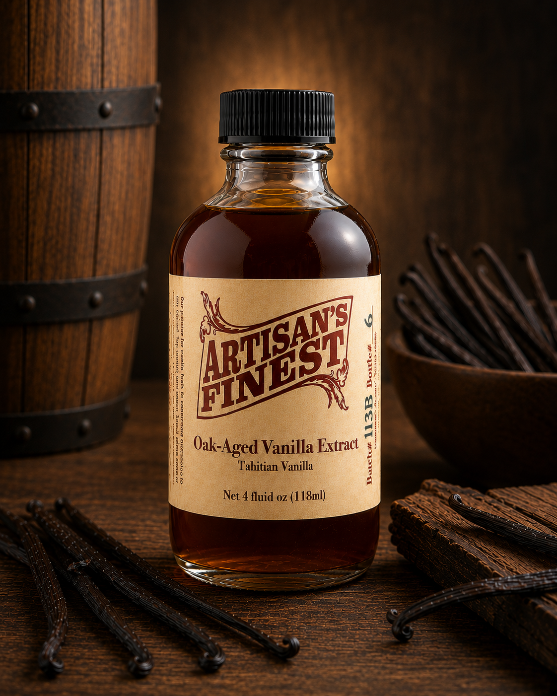
After extraction, this vanilla rests with toasted oak, creating additional layers of complexity and depth. The result is a smooth, sophisticated vanilla with subtle notes of barrel oak and warm spice.
Extracted with rum to create notes of caramelized sugar, tropical warmth, and rich vanilla. Smooth and inviting, Golden Rum Vanilla shines in both baking and beverages.
Best Uses: Rum cakes, banana bread, French toast, coffee, tropical desserts.
Citrus Blossom Vanilla
Bright, Floral, and Unexpected. (Spring Release)
$18.95 · 4 fl oz (118 ml)
A unique blend of vanilla, citrus peels, and delicate floral notes. Light and refreshing while remaining unmistakably vanilla, Citrus Blossom brings a fresh perspective to baking and beverages.
Best Uses: Lemon desserts, pound cake, tea, fruit dishes, spring baking.
Blue Agave Vanilla
Bold. Distinctive. Southwestern Inspired.
$16.95 · 4 fl oz (118 ml)
Crafted with premium vanilla beans and blue agave spirits, this unique extract offers a flavor profile unlike traditional vanilla. The natural sweetness of agave enhances the richness of the vanilla while adding subtle earthy and herbal notes. Smooth and complex, it bridges the worlds of baking, grilling, and craft cocktails, with a clean finish that pairs well with chocolate, citrus, caramel, and spice-forward recipes.
Best Uses: Chocolate desserts, brownies, citrus cakes, grilled fruits, homemade ice cream, margarita-inspired cocktails, and Southwestern cuisine.
Vanilla and traditional autumn spices come together to create a warm, comforting extract perfect for seasonal baking. Cinnamon, nutmeg, and clove notes complement rich vanilla for a true harvest flavor experience.
Best Uses: Pumpkin bread, muffins, coffee, cheesecake, holiday desserts.
Winter Blend Vanilla
Crafted for the Holiday Season.
$18.95 · 4 fl oz (118 ml)
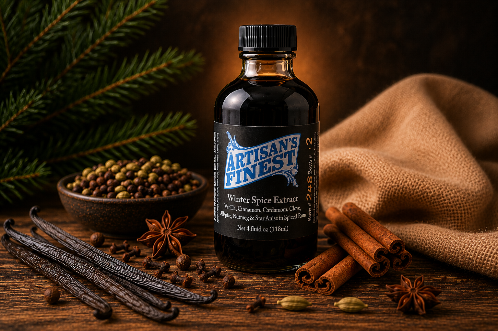
A festive blend of vanilla and warming seasonal spices designed for holiday baking and entertaining. Rich, aromatic, and comforting, it captures the flavors of gatherings around the table.
Best Uses: Christmas cookies, breads, cakes, hot cocoa, holiday cocktails.
Sugar & Salt Free Seasonings
Full-flavor blends for cooks who want taste without added sugar or salt.
All Purpose Seasoning
$6.95 · Net wt approx. 3 oz (85 g)
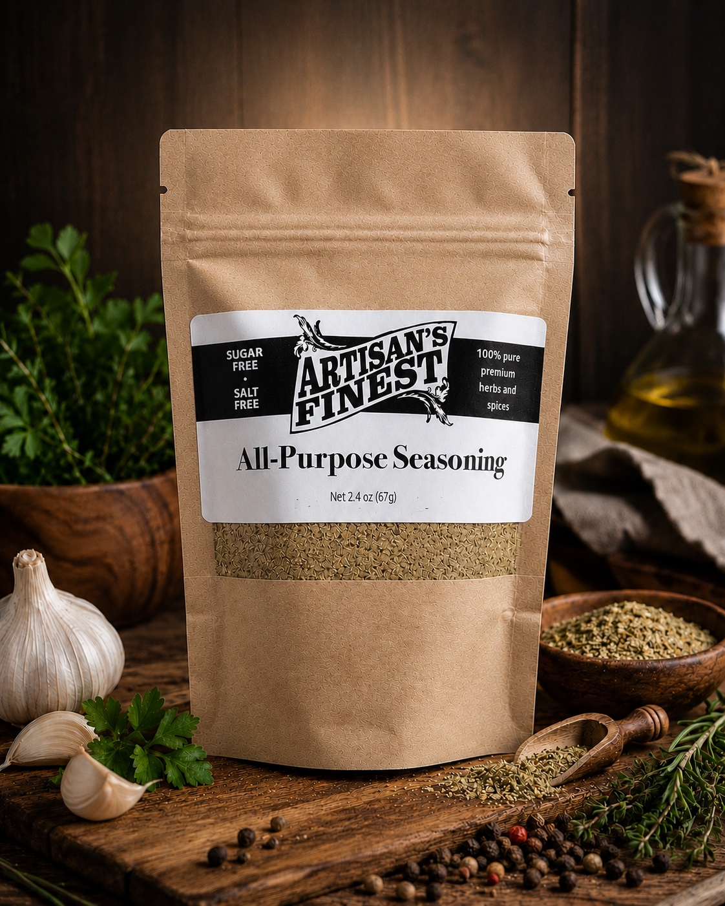
A versatile blend crafted to be your everyday kitchen companion. Garlic, onion, herbs, and spices combine to create a balanced seasoning that enhances everything from meats and vegetables to soups, eggs, and casseroles. One shaker. Endless possibilities.
Ranch Seasoning
$6.95 · Net wt approx. 3 oz (85 g)
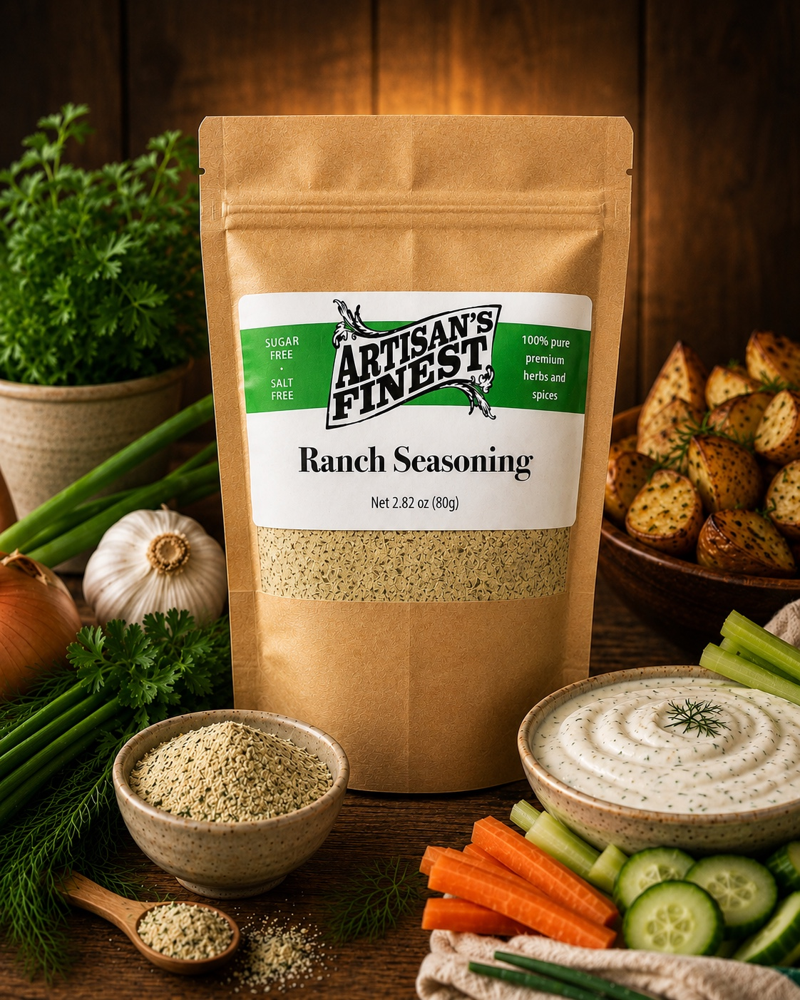
All the savory character of classic ranch seasoning without the sugar or salt. Rich garlic, onion, and herbs make this blend perfect for dips, dressings, roasted vegetables, potatoes, and chicken.
Italian Seasoning
$6.95 · Net wt approx. 3 oz (85 g)
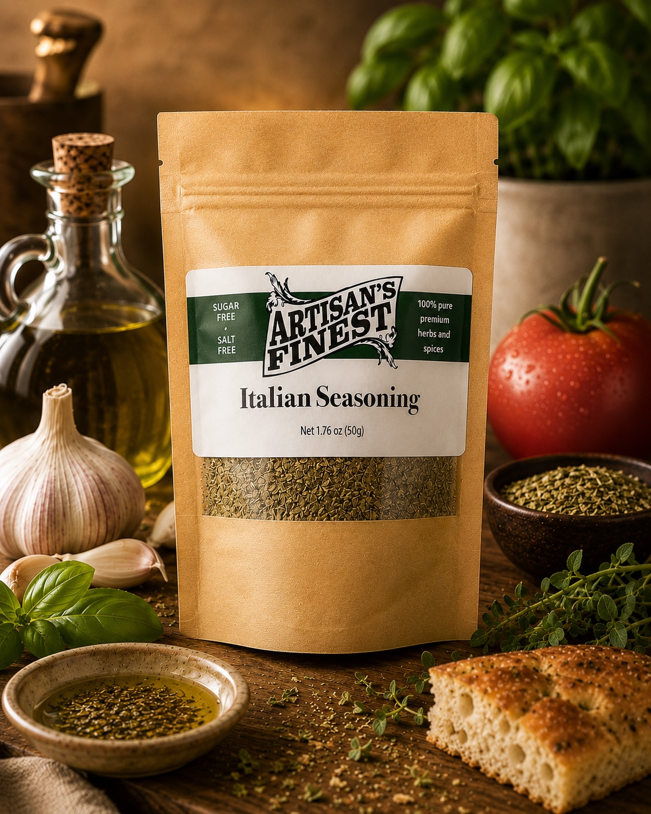
A timeless blend of garlic, onion, and traditional Italian herbs. Ideal for pasta dishes, sauces, pizza, vegetables, poultry, and any recipe that could benefit from a touch of Old World flavor.
Montreal Steak Seasoning
$6.95 · Net wt approx. 3 oz (85 g)
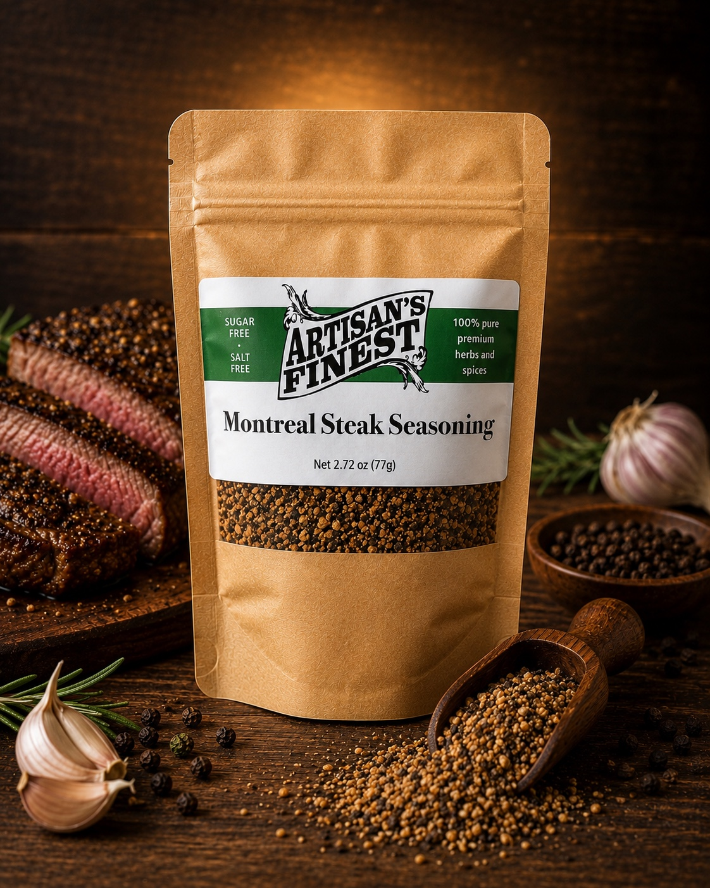
A steakhouse classic featuring coarse spices, garlic, and pepper. While exceptional on beef, this robust blend is equally delicious on pork, chicken, vegetables, and potatoes.
Fajita & Taco Seasoning
$6.95 · Net wt approx. 3 oz (85 g)
Bring authentic Tex-Mex flavor to your kitchen. A savory combination of chili peppers, garlic, onion, and spices designed for tacos, fajitas, burritos, grilled meats, and vegetables.
Curry Seasoning
$6.95 · Net wt approx. 3 oz (85 g)
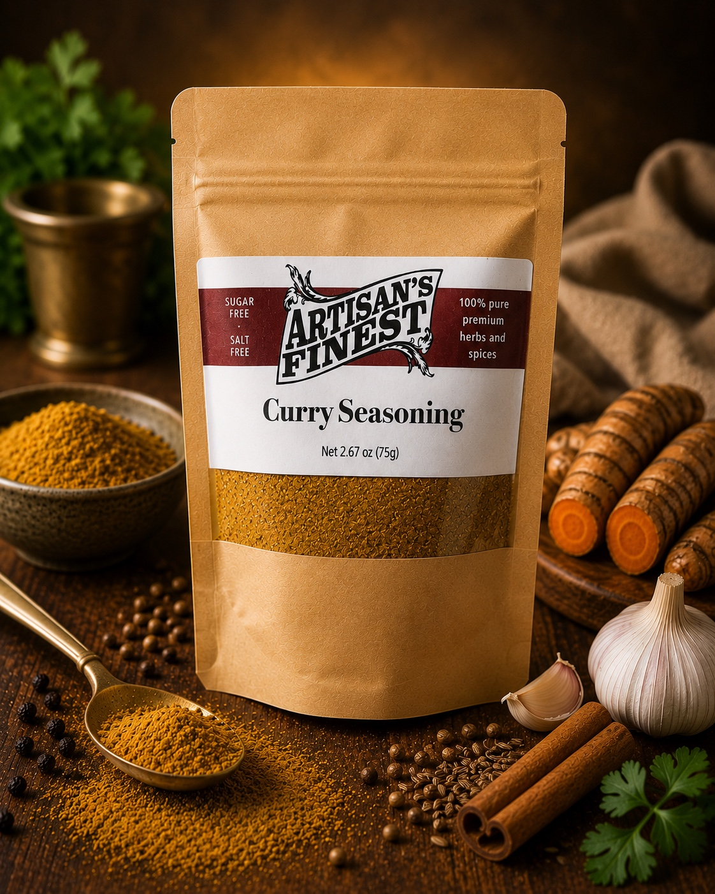
A warm and aromatic blend of traditional curry spices that delivers layers of flavor without overwhelming heat. Perfect for chicken, vegetables, rice, soups, and international-inspired dishes.
Everything Bagel Seasoning
$6.95 · Net wt approx. 3 oz (85 g)
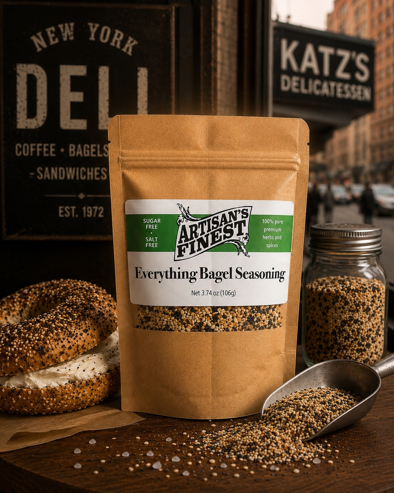
The classic bagel-shop favorite transformed into an all-purpose seasoning. A savory blend of garlic, onion, sesame seeds, and poppy seeds adds texture and flavor to eggs, vegetables, chicken, seafood, and more.
Caribbean Jerk Seasoning
$6.95 · Net wt approx. 3 oz (85 g)
A vibrant island-inspired blend featuring warm spices, herbs, and peppers. Designed to deliver the bold flavors of Caribbean cooking to chicken, pork, seafood, vegetables, and grilled dishes.
Greek Seasoning
$6.95 · Net wt approx. 3 oz (85 g)
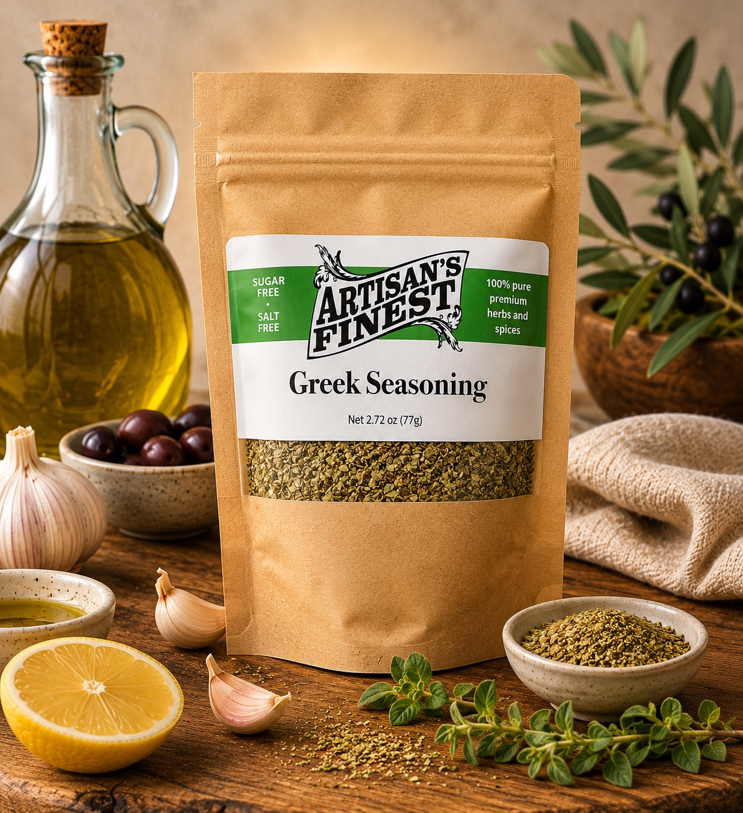
A bright and herbaceous seasoning featuring classic Greek flavors. Oregano, garlic, and aromatic herbs create a blend perfect for chicken, lamb, seafood, roasted vegetables, and homemade dressings.
Mediterranean Seasoning
$6.95 · Net wt approx. 3 oz (85 g)
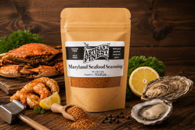
Inspired by the sunny flavors of the Mediterranean coast, this blend combines herbs and spices traditionally used throughout Greece, Italy, and the Middle East. Excellent on vegetables, chicken, seafood, grains, and salads.
Garlic Herb Seasoning
$6.95 · Net wt approx. 3 oz (85 g)
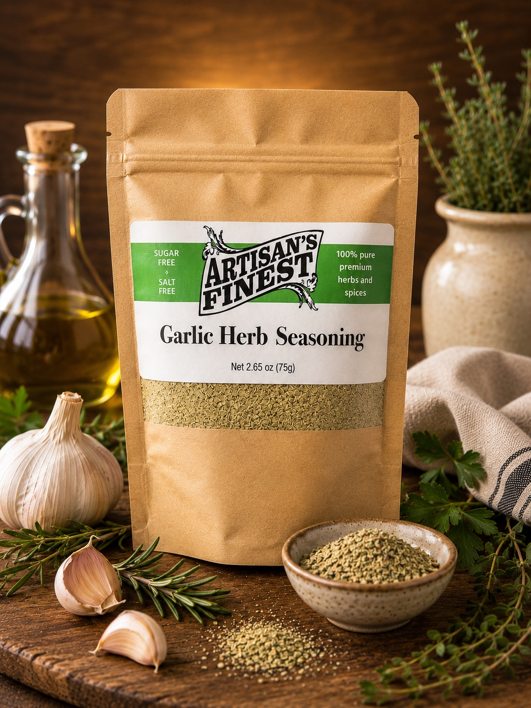
A simple yet flavorful blend built around the timeless partnership of garlic and herbs. Versatile enough for meats, vegetables, breads, potatoes, soups, and homemade sauces.
Citrus Herb Seasoning
$6.95 · Net wt approx. 3 oz (85 g)
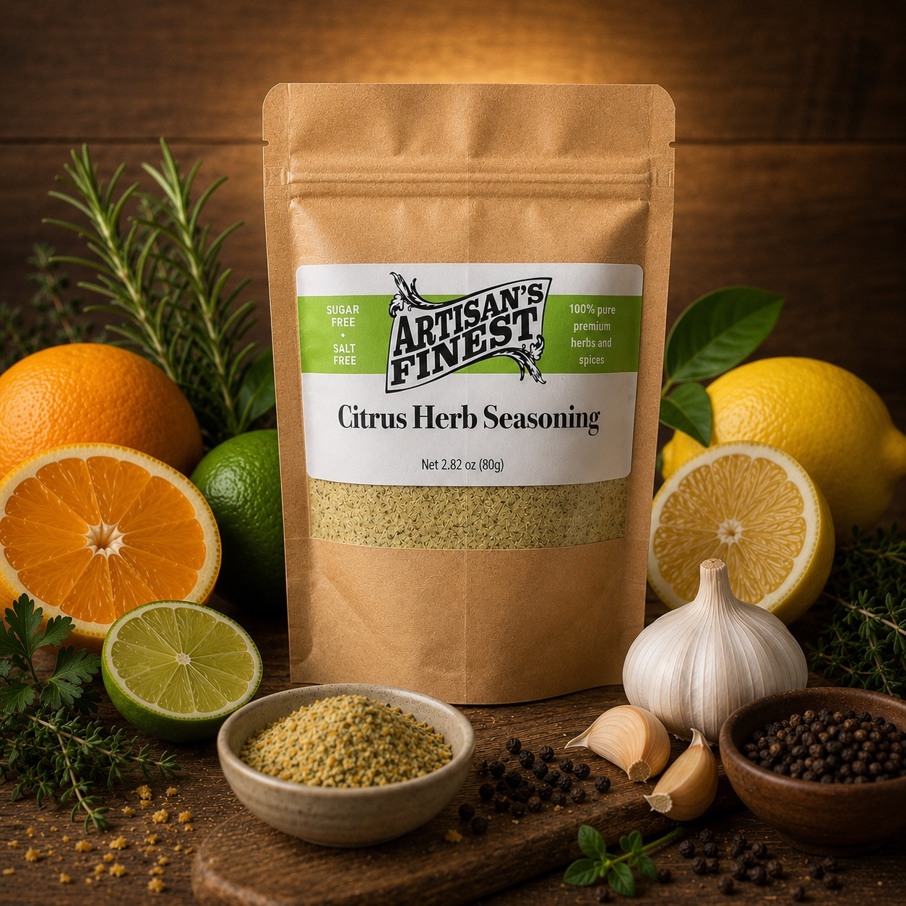
A bright combination of citrus notes and garden herbs creates a fresh, clean flavor profile. Excellent on chicken, seafood, vegetables, rice, and light summer dishes.
Roasted Vegetable Seasoning
$6.95 · Net wt approx. 3 oz (85 g)
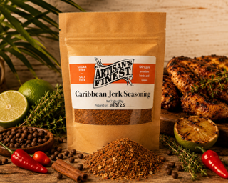
Created specifically to bring out the natural sweetness and flavor of fresh vegetables. A balanced blend of herbs and spices turns ordinary roasted vegetables into a memorable side dish.
Creole Seasoning
$6.95 · Net wt approx. 3 oz (85 g)
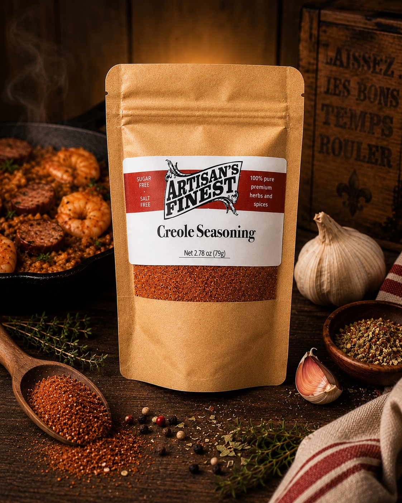
Bold, vibrant, and unmistakably Southern. This Louisiana-inspired blend combines garlic, onion, peppers, and spices for a robust seasoning that shines on seafood, poultry, vegetables, rice dishes, and gumbo.
Maryland Seafood Seasoning
$6.95 · Net wt approx. 3 oz (85 g)
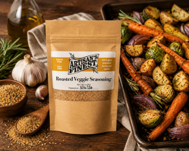
Inspired by the flavors of the Chesapeake Bay, this blend complements fish, shrimp, crab, scallops, and vegetables. A coastal favorite that brings out the best in seafood without masking its natural flavor.
Signature BBQ Rubs
Regional and specialty rubs for ribs, pork, chicken, brisket, and the grill.
Texas BBQ Rub
Inspired by the bold simplicity of Texas barbecue, this rub focuses on savory flavor and a balanced blend of chili powder, mustard, pepper, and spice. Built to enhance brisket, beef, pork, and chicken without overpowering them, it's a true pitmaster-style seasoning where great barbecue begins with the rub.
Best On: Brisket, steaks, burgers, pork shoulder, smoked turkey.
Memphis BBQ Rub
Traditional Memphis barbecue is all about the rub. Sweet brown sugar, paprika, garlic, onion, and cayenne create a flavorful crust that's equally at home on ribs, pork shoulder, or chicken. Perfect for barbecue purists who appreciate great flavor without relying on sauce.
Best On: Ribs, pork shoulder, chicken wings, smoked turkey.
Kansas City BBQ Rub
Sweet, savory, and perfectly balanced, Kansas City captures the flavor profile that made Midwest barbecue famous. Brown sugar, paprika, garlic, and a touch of heat create a rich bark and deep flavor on everything from ribs and brisket to burnt ends and chicken.
Best On: Ribs, brisket, burnt ends, pork chops, chicken.
Carolina BBQ Rub
A tribute to one of America's oldest barbecue traditions. This blend combines brown sugar, pepper, cumin, and smoked paprika to create a balanced seasoning that enhances the natural flavor of pork while remaining versatile enough for beef, poultry, and vegetables.
Best On: Pulled pork, pork tenderloin, chicken, turkey, roasted vegetables.
Coffee Ancho BBQ Rub
Rich coffee and earthy ancho peppers combine to create one of our most distinctive barbecue blends. Coffee helps develop deep flavor while naturally tenderizing meat, while ancho peppers contribute mild heat, smokiness, and subtle sweetness.
Best On: Brisket, beef ribs, steaks, venison, burgers.
Mesquite BBQ Rub
A Louisiana-inspired blend of smoky mesquite, peppers, garlic, and spice. Sweet, savory, and slightly spicy, Mesquite delivers a deep wood-fired flavor that works beautifully on meats, vegetables, baked beans, and even snack foods.
Best On: Steaks, pork chops, burgers, grilled corn, baked beans.
Lemon Herb BBQ Rub
Bright citrus and garden herbs come together in a lighter barbecue blend perfect for seafood, poultry, and pork. Garlic, lemon peel, rosemary, thyme, and parsley create a fresh, clean flavor profile that enhances rather than overwhelms.
Best On: Fish, shrimp, chicken breast, pork tenderloin, vegetables.
Asian Sesame BBQ Rub
A complex blend featuring garlic, sesame, ginger, Sichuan peppercorns, star anise, and warming spices. This unique seasoning delivers layers of sweet, savory, and aromatic flavor that shine on grilled meats, stir-fry vegetables, and seafood.
Best On: Chicken, pork, shrimp, salmon, stir-fry vegetables.
Chipotle BBQ Rub
Smoky chipotle peppers, garlic, cumin, and paprika create a bold southwestern-inspired rub with layers of heat and complexity. The smoky character builds throughout the blend, making it one of the most robust and flavorful rubs in our collection.
Best On: Chicken thighs, pork shoulder, tacos, fajitas, grilled vegetables.
Honey Dijon BBQ Rub
Sweet honey, mustard, garlic, and a touch of spice make this one of the most versatile products we create. Use it as a traditional rub or mix it into oils, mayonnaise, sour cream, or yogurt to create marinades, sauces, dips, and dressings.
Best On: Chicken, pork loin, salmon, roasted vegetables, potato salad.
Rib Dust BBQ Rub
More than 25 years in the making, Rib Dust was developed specifically for barbecue's most iconic cut. A carefully balanced blend of sugars, peppers, garlic, onion, and premium spices creates the perfect foundation for tender, flavorful ribs with championship-worthy bark.
Best On: Baby back ribs, St. Louis ribs, pork spare ribs, rib tips.
Smokehouse BBQ Rub
Designed specifically for smokers and slow-cooked barbecue, Smokehouse delivers bold layers of smoky, savory flavor. Whether you're preparing wings, pulled pork, brisket, or even homemade potato chips, this blend brings authentic smokehouse character to every bite.
Best On: Pork shoulder, wings, brisket, smoked potatoes, jerky.
Heritage Sausage Blends
Old-world seasoning blends for homemade sausage. Launching Fall 2026 — request info to hear when they are available.
Old Hearth Breakfast
A classic country-style breakfast sausage seasoning crafted with sage, black pepper, and savory herbs. Rich, comforting, and familiar, it delivers the flavor of a farmhouse breakfast cooked slowly on a cast-iron skillet. Perfect for patties, links, biscuits, gravy, and breakfast casseroles.
Heritage Farmhouse
A balanced, all-purpose country sausage seasoning inspired by traditional farm kitchens. Simple, savory, and deeply satisfying, it delivers the familiar flavor many people remember from homemade sausage prepared for family gatherings and holiday breakfasts.
Maplewood Reserve
A premium breakfast-style seasoning that pairs warm spices with a touch of maple-inspired sweetness. Rich and inviting, it creates a sausage that shines alongside pancakes, waffles, biscuits, and other breakfast favorites.
Tuscan Garden Italian
Inspired by the rolling hills of Tuscany, this blend combines garlic, fennel, basil, oregano, and traditional Italian herbs. Balanced and aromatic, it creates a versatile sweet Italian sausage ideal for pasta dishes, pizza, meatballs, and sandwiches.
Calabrian Ember Hot Italian
A bold Southern Italian sausage seasoning featuring garlic, fennel, and fiery peppers. The heat builds gradually without overwhelming the palate, creating a robust sausage perfect for pizzas, pasta sauces, grilled links, and hearty Italian dishes.
Bavarian Heritage Bratwurst
A traditional German-style bratwurst seasoning with white pepper, nutmeg, and classic old-world spices. Crafted to create a smooth, balanced sausage that pairs beautifully with mustard, sauerkraut, pretzels, and a cold beer.
Mercado Rojo Chorizo
Inspired by the vibrant markets of Spain and Latin America, this blend layers paprika, garlic, chile peppers, and traditional spices into a rich, savory sausage with deep color and character. Excellent for tacos, breakfast skillets, soups, and rice dishes.
Bayou Smoke Andouille
A Louisiana-inspired blend featuring garlic, black pepper, cayenne, and smoky spices. Built for bold flavor, it creates authentic andouille-style sausage perfect for gumbo, jambalaya, red beans and rice, or grilling.
Sicilian Sun Sweet Italian
A bright and herbaceous sweet Italian seasoning featuring fennel, garlic, basil, and Mediterranean herbs. Crafted to capture the warm flavors of Southern Italy, it creates a flavorful sausage ideal for pasta, pizza, and classic Italian recipes.
Rhine Valley Garlic
A garlic-forward German-style sausage seasoning balanced with pepper and traditional herbs. Rich and savory without being overpowering, it produces a versatile sausage equally at home on the grill, in soups, or alongside roasted potatoes.
Appalachian Smoke
A tribute to mountain smokehouses and family recipes handed down through generations. This blend combines savory spices with a subtle smoky character to create a versatile sausage equally suited for breakfast, grilling, or slow-cooked comfort food.
Old World Kielbasa
Inspired by generations of Eastern European sausage makers, this blend delivers the savory garlic and pepper profile that defines traditional kielbasa. Excellent smoked or fresh, it pairs naturally with cabbage, potatoes, and hearty family meals.
Highland Forager
Inspired by woodland trails and rustic mountain cooking, this blend highlights earthy herbs and savory spices for a distinctive sausage experience. Crafted for those who appreciate deeper, more complex flavors, it pairs beautifully with mushrooms, potatoes, and hearty seasonal meals.
Gift Sets & Bundles
Ready-to-give sets and custom baskets for hosts, holidays, and clients.
Smokehouse Bundle
A grill-focused set for ribs, pork, chicken, burgers, vegetables, and cookout baskets.
Build Your Own Gift Set
Mix vanillas, seasonings, and rubs into a custom basket. Request a custom bundle and we will put it together.
For current batch availability, custom gift requests, or larger orders, use the request form and Chris & Becky will follow up with details.